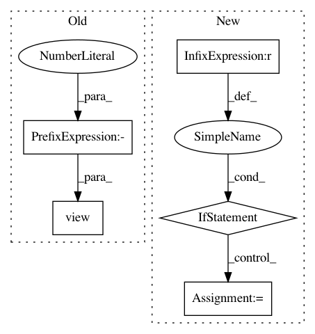

7db6246fae613a5abf1fbea0b2b987b615ae5a13,visdialch/encoders/lf.py,LateFusionEncoder,forward,#LateFusionEncoder#,42
Before Change
ques_embed = self.ques_rnn(ques_embed, batch["ques_len"])
// embed history
hist = hist.view(-1, hist.size(2))
hist_embed = self.word_embed(hist)
hist_embed = self.hist_rnn(hist_embed, batch["hist_len"])
fused_vector = torch.cat((img, ques_embed, hist_embed), 1)
After Change
batch_size, num_rounds, max_sequence_length = ques.size()
// average bottom-up features of all proposals, to form fc7-like features
if img.dim() == 3:
img = torch.mean(img, dim=1) // shape: (batch, img_feature_size)
// repeat image feature vectors to be provided for every round
img = img.view(batch_size, 1, self.config["img_feature_size"])
img = img.repeat(1, num_rounds, 1)
img = img.view(batch_size * num_rounds, self.config["img_feature_size"])
In pattern: SUPERPATTERN
Frequency: 3
Non-data size: 5
Instances
Project Name: batra-mlp-lab/visdial-challenge-starter-pytorch
Commit Name: 7db6246fae613a5abf1fbea0b2b987b615ae5a13
Time: 2018-12-26
Author: karandesai281196@gmail.com
File Name: visdialch/encoders/lf.py
Class Name: LateFusionEncoder
Method Name: forward
Project Name: ikostrikov/pytorch-a2c-ppo-acktr
Commit Name: 5dba182362d6d3b7d87fe852a4d707bd7ec3153a
Time: 2017-11-17
Author: ikostrikov@gmail.com
File Name: main.py
Class Name:
Method Name: main
Project Name: ikostrikov/pytorch-a2c-ppo-acktr
Commit Name: 54a0f981802ccb86350033a42c3cedd114efc49d
Time: 2017-09-24
Author: ikostrikov@gmail.com
File Name: main.py
Class Name:
Method Name: main